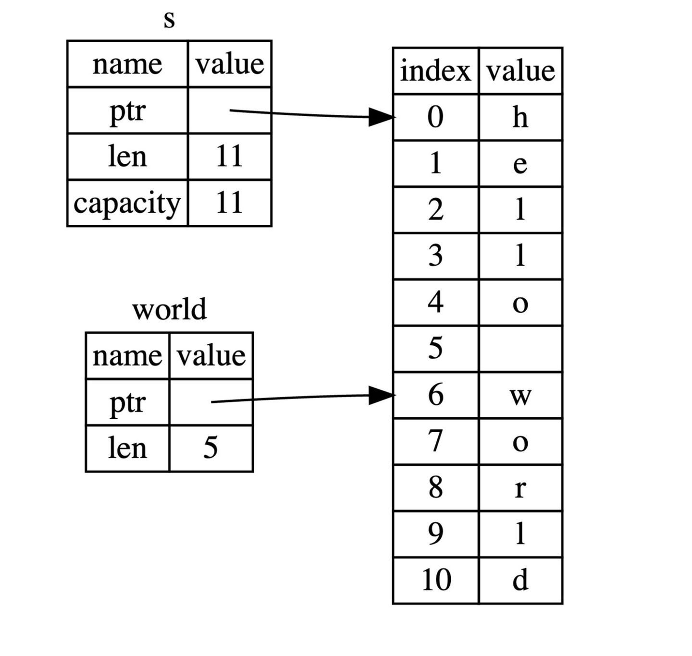
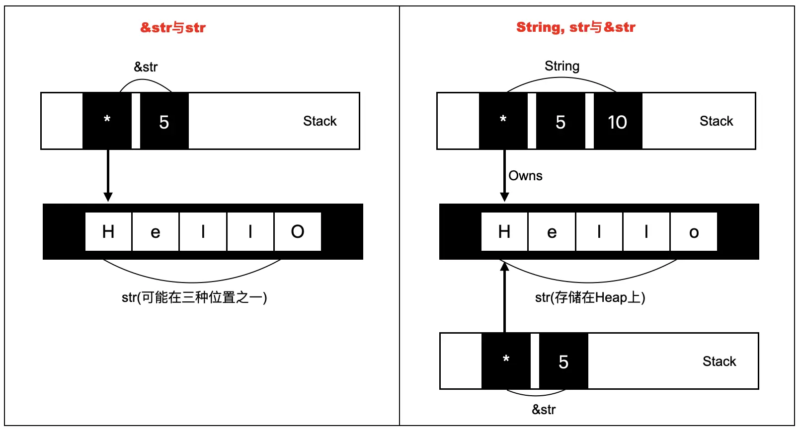

何为切片 Slice
Rust 中，切片(slice)属于原始数据类型 primitive type[1]，被写进 Rust core 库。切片类型的泛型写法是 [T]，它是对内存中一系列 T 类型元素所组成序列的“视图(View)”。这里的内存，可能是堆(Heap)、栈(Stack)、只读数据区(Literals)。特别的，字符串切片 str 就是符合 UTF-8 编码的数组切片 [u8]。
UTF-8(8-bit Unicode Transformation Format/Universal Character Set)是在 Unicode 标准基础上定义的一种可变长度字符编码。它可以表示 Unicode 标准中的任何字符，而且其编码中的第一个字节仍与 ASCII 兼容。
Slice 类型非常特殊，你不能在代码中声明类型为 [T] 或 str 的局部变量，除非使用 nightly 版本并且开启名为 unsized_locals 的 feature：
|
|
对 [T] 切片而言，有几种常见的引用形式：
&[T]：共享切片(shared slice)，是切片的不可变借用，它不拥有内存对象[T]的所有权。共享切片有时也被简称为切片&mut [T]：可变切片(mutable slice)，可变借用于它指向的内存对象[T]，同样没有所有权Box<[T]>：智能指针切片(boxed slice)，内存对象[T]存储在堆上，Box 切片拥有它的所有权Vec<T>：可变长的动态数组，内存对象[T]存储在堆上，Vec 拥有它的所有权
str 切片同理，它只能以 &str &mut str Box<str> String 等形式呈现，前两者是对 str 的引用，后两者包含了指向 str 的指针。
|
|
[T] 和 str 在某些情况下是只读的，这时 Rust 编译器只允许我们使用它的共享引用 &[T] &str。一个常见的例子是字符串字面量，它被硬编码进可执行程序，在程序运行的整个生命周期内都有效，因而指向它的引用可以具有静态生命周期，换言之，绑定字面量的变量类型可以是 &'static str（这并不意味着有 'static 生命周期的 str 就有一定不可变，仍然有办法构造出 &'static mut str）。
切片的所有元素总是初始化过的，使用 Rust 中的安全(safe)方法或操作符来访问切片时总是会做越界检查。
有些编程语言（如 C 语言）会在字符串末尾添加一个零字符 \0，并记录起始地址。要确定字符串的长度，程序必须从起始位置开始遍历原始字节，直到找到这个零字节。但 Rust 采用的方法不同：它用来访问字符串的 &str 引用是宽指针，包括了字符串起始地址（裸指针）和所需字节数，这比追加零字节更好，因为计算在编译时就提前完成。
事实上，上述三种切片引用都是宽指针，均包括了指向内存对象的指针和内存对象的尺寸，是普通指针的两倍大小。你可能会好奇，为什么切片的引用都是宽指针？这是因为切片是一种动态尺寸类型(Dynamically sized type)。
动态尺寸类型 DST
Rust 中大多数的类型都有一个在编译时就已知的固定尺寸，并据此实现了 Sized Trait。只有在运行时才知道尺寸的类型称为动态尺寸类型(dynamically sized type)（DST），或者非正式地称为非固定尺寸类型(unsized type)。切片和特征对象(Trait object)是 DST 的两个例子。
注意，这里提到的尺寸未知是对类型而言，即 DST(slice, Trait object) 类型的尺寸无法确定，而非值的尺寸。例如，str 类型可以是任意长度（只要不超出计算机硬件的限制），但具体到一个字符串字面量 "Hello World!"，其长度在编译时是确定无疑且不可更改的。
固定尺寸类型的引用只需要指向内存对象的第一个字节，不需要知道内存对象的尺寸，因为 Rust 在编译时会生成包含类型信息的机器码，对每个固定尺寸类型的数据，Rust 都能确定其大小。但对于动态尺寸类型，即使知道了内存对象的类型(比如 str)，仍无法确定应该引用的内存范围，因而必须使用宽指针。
编译器在编译时需要计算局部变量所需的内存，并相应地为每个栈帧分配空间。[1..4] 是切片语法，会从变量 a 的内存对象中截取一部分。编译器无法从切片语法中确定结果切片的大小，因此下面的代码报错：
|
|
这就是为什么 Rust 不允许声明 [T] 或 str 类型的局部变量。
String 字符串
如前所述，Rust str 是符合 UTF-8 规范的一串 [u8] 数据，同理 String 类型是基于 Vec<u8> 的封装，二者堆内存分配策略一致：2->4->8，如果容量不够，下次申请的为前一次的 2 倍。和 Vec<u8> 一样，String 类型变量的内存对象存储在堆上，且拥有它的所有权。
String 类型在标准库中的定义：
|
|
可以看出，String 类型定义中的 vec 字段是私有的。这意味着我们不能直接创建字符串实例，只能通过封装的方法来创建。之所以保持私有，是因为并非所有 [u8] 字节流都符合 UTF-8 标准，与底层 u8 字节的直接交互可能会破坏字符串数据。通过这种受控访问，编译器可以确保 String 数据始终有效。以下是两种初始化 String 的方式：
|
|
作为存储在栈上的宽指针，String 类型包括三部分：指针、长度和容量，相比于 &str 类型仅增加了一个容量字段，因为 String 指向堆内存，所以运行过程中它的长度可以动态改变。

◎ s 是 String 类型，world 是 &str 类型&str 不仅可以指向堆和只读数据区，还可以指向栈：
|
|
只需将分配到栈上的字节数组转换为 &str 类型，这时 str 自然是栈上的内存对象。
Box<str> 字符串
|
|
Box<str> 类型是 Box<[T]> 的子集，如前所述，它是一个智能指针/宽指针，str 被存储在堆上。不同于 &str 和 &mut str，Box<str> 拥有内存对象的所有权。相比 String 类型，Box<str> 缺少 capacity 字段，这意味着无法修改 Box<str> 中 str 的长度，只能改变 str 中每个字符的值。
&str 隐式类型转换
|
|
上述代码中 &s1 &s2 是对 s1 s2 栈内存的引用，而非直接指向堆内存，所以 Rust 允许将 &String &Box<str> 类型隐式转换为 &str 类型，反之则不行。当函数参数为 &str 类型时，不仅能传入 &str 变量，也可以传入 &String &Box<str> 变量，这样设计使代码更灵活。
切片语法
在 Rust 中，我们可以用切片语法 [x..y] 从内存中截取一串连续的同类型值，返回一个切片。x..y 表示 [x, y) 的数学含义，.. 两边可以没有运算数：
..y等价于0..yx..等价于位置x到数据结束..等价于位置0到结束
切片不能直接与变量绑定，所以必须在切片语法 [x..y] 前加上 & 符号，这会得到切片的引用。考虑到自动解引用，切片语法可用于 str [T] [T; N] String Vec<T> Box<str> Box<T> 类型和它们的引用。
对字符串使用切片语法需要格外小心，切片的索引必须落在字符之间的边界位置，也就是 UTF-8 字符的边界，例如中文在 UTF-8 中占用三个字节，若只取只取中文字符串的前两个字节，连第一个字都取不完整，此时程序会直接崩溃退出。
总结
[T] str 类型的内存对象可以存储在以下三种位置：
- Stack 栈：如前所述
- Heap 堆：
Box<T>String类型 - 只读数据区：字符串字面量
"hello"直接被硬编码进可执行程序中，运行时载入内存模型的只读数据区
一图以蔽之，Rust 字符串的内存分布模型：
